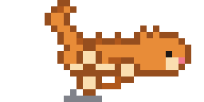
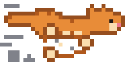
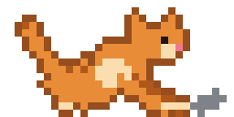
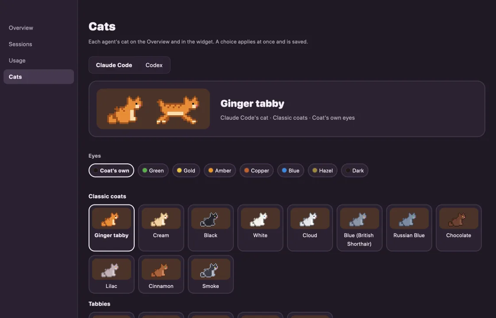
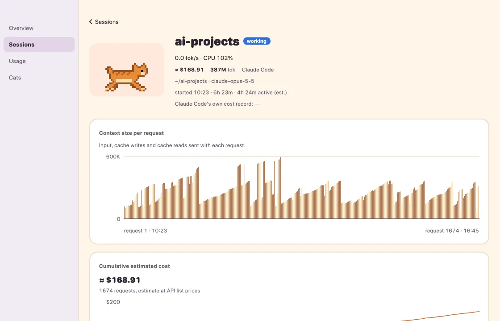
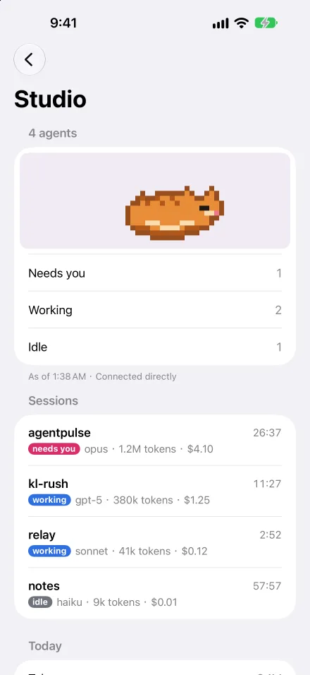
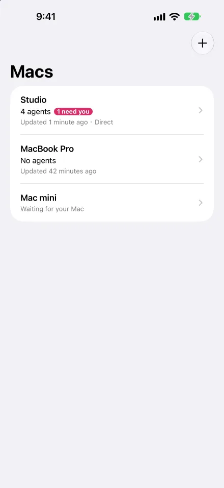
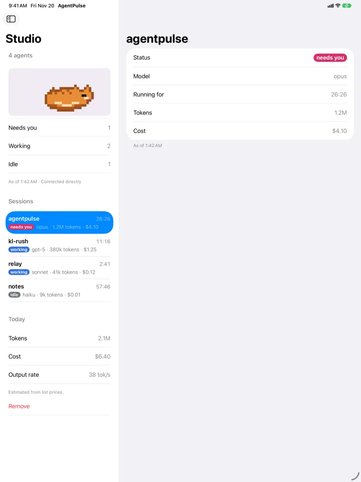

One cat per agent. Read its mood, not a dashboard.
Each session gets its own cat, and it moves with what its agent is really doing.
-

-

-

-


Three questions it answers
Is anything stuck?
The roster. One card per session. Look at the ribbon first: blue is working, grey is idle, and a card that is waiting on you turns pink and goes to the front. The figures under it are the session's tokens and its cost, marked ≈ when it is an estimate.

What's it costing?
Usage. Where the money went: estimated cost per day for 30 days by agent, what caching saved, and today's sessions on a timeline. A day with no stored data is drawn as a gap, never as zero.

How hard is it working?
Session detail. Open any session to see its context size per request, its running estimated cost, CPU and memory.

These images are rendered by the app's own screenshot mode from the developer's real sessions, not mocked up.
Step away from your desk. Your phone still knows.
AgentPulse for iPhone and iPad shows which of your Mac's agents need you, which are working and what today has cost. Pair it with the Mac app by scanning a QR code.
- Who needs you, first Sessions waiting on your answer are flagged at the top.
- Several Macs Pair as many as you like and switch between them. Home Screen widgets show the latest state.
- End-to-end encrypted On the same network the phone talks to your Mac directly; elsewhere, through a relay that only ever sees ciphertext.




Your prompts never leave your Mac. AgentPulse never reads them.
- No account, no API key Install it and open it. There is nothing to sign in to.
- Metadata only Prompts, code and responses are never read, stored or shown.
- One automatic network request The update check, which asks GitHub for the public list of releases. You can turn it off.
- Under 2% of one CPU core The collector measured 1.05% and 13 MB with three live agents, and 1.56% with the Codex adapter on.
- Counts checked Token totals matched an independent count exactly, in every session checked.
- Open source MIT or Apache 2.0. Read every line on GitHub.
What it reads, and how sure each number is
AgentPulse reads the agents' own files on your Mac and the system's process table. Every figure says whether it was measured or estimated, and anything it cannot know is shown as unavailable, never as zero.
| Figure | How sure | From |
|---|---|---|
| Tokens, model, start and last activity | measured | The agent's own usage records |
| Working, waiting, idle | measured | The agent's own session state. Codex CLI and OpenCode record no waiting-on-you state, so their sessions never show as waiting. |
| CPU and memory per session | measured | The macOS process table |
| Cost, Claude Code and Codex CLI | estimated | Tokens × API list prices, from a price table you can edit. A subscription plan is not reflected. |
| Cost, OpenCode and Grok CLI | recorded | The agent's own charge for each response; list prices where it records none |
| Plan limit | Codex and Claude Code | Codex's own records. Claude Code shares its limits only with a status line command, which you add yourself (see the README). |
| Active time | estimated | Gaps of up to 60 seconds between records |
| GPU per agent | unavailable | macOS has no documented way to measure it. Whole-Mac GPU use is shown instead. |
| Prompts, code, responses | never read | Only the metadata fields listed above are kept; content is never stored or shown |
The full method, agent by agent: telemetry specification.
Privacy
Everything AgentPulse reads stays on your Mac. It never reads or stores prompt, response or file content.
On its own it makes one kind of network request: the update check, which asks GitHub for the public list of AgentPulse releases every 2 hours. It sends no cookies, identifiers or anything about you or your agents; GitHub sees your IP address, as with any connection. You can turn the automatic check off in Settings.
Pairing with AgentPulse for iPhone and iPad is opt-in. Until you pair a phone, it sends nothing.
This page sets no cookies and loads nothing from anywhere else.
Works with the agents you already run
- Claude Code
- Codex CLI
- OpenCode
- Grok CLI
Subagents included. Nothing to install or configure in the agents.
Try it in a minute.
Download AgentPulseSigned and notarized by Apple · macOS 14 or later on Apple Silicon · Release notes · All releases
Install
- Download the DMG, open it and drag AgentPulse to Applications.
- Open AgentPulse. A cat appears in the menu bar; closing the window keeps it running there.
- Updates: it checks GitHub for a new release and shows a notice. Nothing installs until you click Install Update, and an update is installed only if its signature checks out.
The Mac app is not in the App Store on purpose: the App Store sandbox would stop it reading other apps' session files and the process table.
Requirements
- macOS 14 or later on an Apple Silicon Mac.
- At least one of Claude Code, Codex CLI, OpenCode or Grok CLI on the same Mac.
Questions
Does it work on Intel Macs?
Not yet. It needs an Apple Silicon Mac.
Are the costs exact?
No. For Claude Code and Codex CLI they're estimates at API list prices, and the app always says so; OpenCode and Grok CLI record their own charge.
How do updates work?
It checks GitHub for a new release and shows a notice. Nothing installs until you click Install Update, and an update is installed only if its signature checks out.